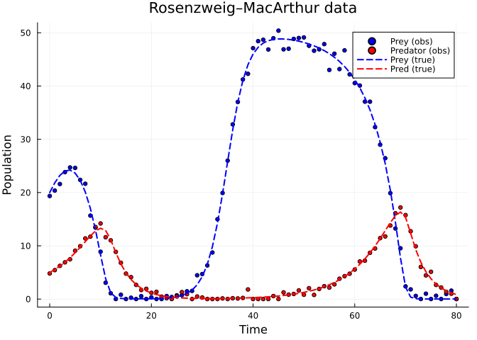
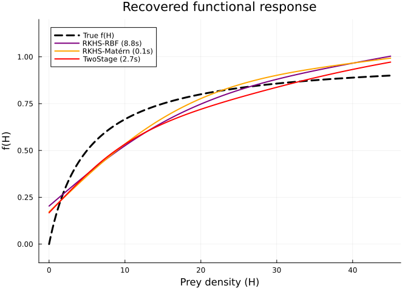
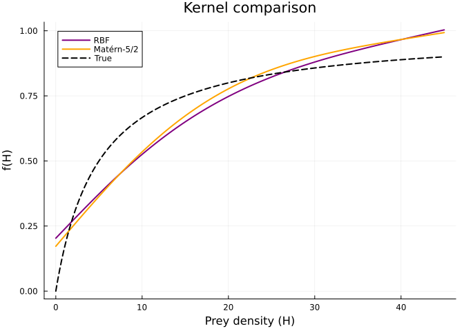
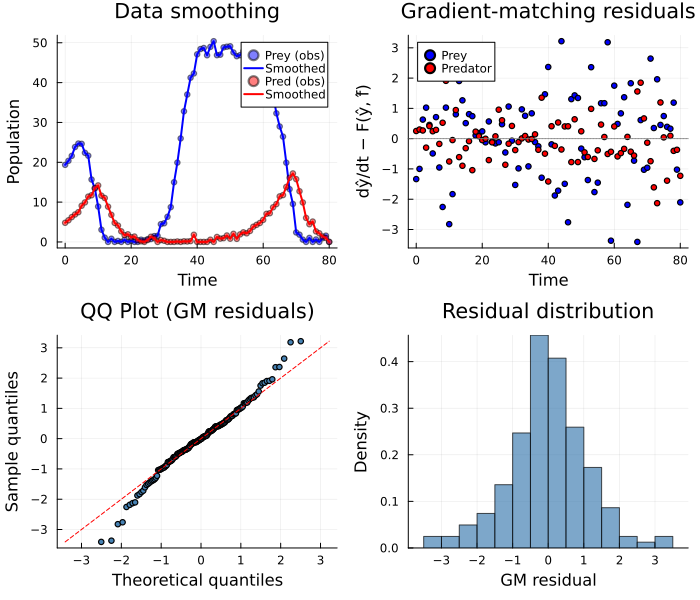

RKHS: Reproducing Kernel Hilbert Space Estimation
Overview
The RKHSSolver implements the trajectory-RKHS method of González et al. (2014): the state trajectory is represented in a time-kernel Reproducing Kernel Hilbert Space, $x_k(t) = m_k + \sum_i b_{k,i}\, k(t, t_i)$, so its derivative is available analytically. Fitting alternates a linear solve for the trajectory coefficients (data fit + RKHS norm + linearized ODE-gradient term) with gradient steps on the unknown-function parameters — no ODE integration is ever performed.
When to use RKHSSolver:
- You want gradient matching with an analytic (not numerically estimated) trajectory derivative
- Your system is partially observed — the Jacobian-coupled trajectory solve infers unobserved states
- You want to avoid ODE integration entirely
Comparison with other nonparametric approaches:
| Approach | Trajectory model | ODE coupling | Integration |
|---|---|---|---|
| BSpline + LAML | ODE solve | Exact (through the solver) | Yes |
| GP (MAGI/ODIN) | GP prior on states | Derivative-covariance weighted | No |
| Neural (UDE) | ODE solve | Exact (through the solver) | Yes |
| RKHS | Time-kernel expansion | Linearized gradient match | No |
Setup
using PartiallySpecifiedModels
using PartiallySpecifiedModels: solve
using OrdinaryDiffEq
using Plots
using Random
Random.seed!(123)TaskLocalRNG()Example: Rosenzweig–MacArthur with Unknown Functional Response
We consider a predator-prey system with logistic prey growth and an unknown predator functional response $f(H)$:
\[\frac{dH}{dt} = rH\left(1 - \frac{H}{K}\right) - f(H)\,P, \quad \frac{dP}{dt} = \epsilon\,f(H)\,P - m\,P\]
where $r = 0.5$, $K = 50$, $\epsilon = 0.5$, $m = 0.3$. The true functional response is Holling Type II: $f(H) = H/(5 + H)$.
function rm!(du, u, p, t)
H, P = u
f_val = p.f(H)
du[1] = 0.5*H*(1 - H/50) - f_val*P
du[2] = 0.5*f_val*P - 0.3*P
end
f_true(H) = H / (5.0 + H)
function rm_true!(du, u, p, t)
H, P = u
f_val = H / (5.0 + H)
du[1] = 0.5*H*(1 - H/50) - f_val*P
du[2] = 0.5*f_val*P - 0.3*P
end
u0 = [20.0, 5.0]
sol_rm = OrdinaryDiffEq.solve(ODEProblem(rm_true!, u0, (0.0, 80.0)), Tsit5(); saveat=1.0)
t_data = collect(sol_rm.t)
rng = Random.Xoshiro(123)
data_rm = max.(hcat(
[sol_rm.u[i][1] + 1.0*randn(rng) for i in 1:length(t_data)],
[sol_rm.u[i][2] + 0.5*randn(rng) for i in 1:length(t_data)]), 0.01)
scatter(t_data, data_rm[:, 1], label="Prey (obs)", ms=3, color=:blue)
scatter!(t_data, data_rm[:, 2], label="Predator (obs)", ms=3, color=:red)
plot!(sol_rm.t, [sol_rm.u[i][1] for i in 1:length(sol_rm.t)],
label="Prey (true)", lw=2, ls=:dash, color=:blue)
plot!(sol_rm.t, [sol_rm.u[i][2] for i in 1:length(sol_rm.t)],
label="Pred (true)", lw=2, ls=:dash, color=:red,
xlabel="Time", ylabel="Population", title="Rosenzweig–MacArthur data")
Fit with RKHS (RBF kernel)
The RBF (Gaussian) time kernel produces infinitely smooth trajectories. The lengthscale is automatically set to time_span / 8 when not specified (default behaviour).
approx_f = BSplineApproximator(:f, (0.0, 50.0), 8; initial=x -> x / 55.0)
prob = PSMProblem(rm!, u0, (0.0, 80.0), [approx_f];
data_times=t_data, data_values=data_rm,
obs_to_state=[1, 2],
known_params=NamedTuple(), solver=Tsit5())
t_rbf = @elapsed sol_rbf = solve(prob,
RKHSSolver(kernel=:rbf, maxiters=400, verbose=true))
println("\nTime: $(round(t_rbf, digits=1))s")RKHSSolver: auto time-kernel lengthscale ℓ=10.0
RKHSSolver: 81 centers/state × 2 states, 8 θ, grid 30, λ=0.01 ρ=1.0
iter 1: J=615.886
iter 2: J=614.507
iter 3: J=614.064
iter 25: J=481.944
iter 50: J=470.568
iter 75: J=469.205
Converged at iter 87
┌ Warning: RKHSSolver: `fitted_values` are the estimated state, and integrating the FITTED dynamics from u0 failed outright, so `data_loss` (314.95) says nothing about how the model itself fits. See `convergence.simulated_data_loss`.
└ @ PartiallySpecifiedModels ~/Projects/psm/PartiallySpecifiedModels.jl/src/rkhs_solver.jl:444
Time: 8.8sFit with RKHS (Matérn-5/2 kernel)
The Matérn-5/2 time kernel produces twice-differentiable trajectories, allowing more local variation than the RBF kernel.
t_mat = @elapsed sol_mat = solve(prob,
RKHSSolver(kernel=:matern52, maxiters=400, verbose=true))
println("\nTime: $(round(t_mat, digits=1))s")RKHSSolver: auto time-kernel lengthscale ℓ=10.0
RKHSSolver: 81 centers/state × 2 states, 8 θ, grid 30, λ=0.01 ρ=1.0
iter 1: J=337.772
iter 2: J=335.965
iter 3: J=335.106
iter 25: J=194.059
iter 50: J=177.457
iter 75: J=175.505
Converged at iter 88
┌ Warning: RKHSSolver: `fitted_values` are the estimated state, and integrating the FITTED dynamics from u0 failed outright, so `data_loss` (91.851) says nothing about how the model itself fits. See `convergence.simulated_data_loss`.
└ @ PartiallySpecifiedModels ~/Projects/psm/PartiallySpecifiedModels.jl/src/rkhs_solver.jl:444
Time: 0.1sCompare with TwoStageSolver
For comparison, we fit using the TwoStageSolver, which first estimates derivatives from smoothed data, then solves a penalised regression for the unknown function, and finally re-integrates the ODE.
t_ts = @elapsed sol_ts = solve(prob,
TwoStageSolver(maxiters=100, verbose=false))
println("TwoStage time: $(round(t_ts, digits=1))s")┌ Warning: TwoStageSolver: integrating the fitted dynamics from u0 failed (ODE solve failed: Unstable). Reporting the stage-1 data smoother as `fitted_values`; `data_loss` therefore measures the SMOOTHER, not the model fit. See `convergence.simulation_failed`.
└ @ PartiallySpecifiedModels ~/Projects/psm/PartiallySpecifiedModels.jl/src/two_stage_solver.jl:313
TwoStage time: 2.7sRecovered Functional Response
H_grid = range(0.0, 45.0, length=200)
f_true_vals = [f_true(H) for H in H_grid]
plot(H_grid, f_true_vals, label="True f(H)", lw=3, color=:black, ls=:dash,
xlabel="Prey density (H)", ylabel="f(H)",
title="Recovered functional response", ylim=(-0.1, 1.2))
plot!(H_grid, [sol_rbf.unknown_functions[:f](H) for H in H_grid],
label="RKHS-RBF ($(round(t_rbf, digits=1))s)", lw=2, color=:purple)
plot!(H_grid, [sol_mat.unknown_functions[:f](H) for H in H_grid],
label="RKHS-Matérn ($(round(t_mat, digits=1))s)", lw=2, color=:orange)
plot!(H_grid, [sol_ts.unknown_functions[:f](H) for H in H_grid],
label="TwoStage ($(round(t_ts, digits=1))s)", lw=2, color=:red)
Error Comparison
H_eval = range(1.0, 40.0, length=50)
true_vals = [f_true(H) for H in H_eval]
mae_rbf = sum(abs.([sol_rbf.unknown_functions[:f](H) for H in H_eval] .- true_vals)) / length(H_eval)
mae_mat = sum(abs.([sol_mat.unknown_functions[:f](H) for H in H_eval] .- true_vals)) / length(H_eval)
mae_ts = sum(abs.([sol_ts.unknown_functions[:f](H) for H in H_eval] .- true_vals)) / length(H_eval)
println("Mean absolute error over [1, 40]:")
println(" RKHS-RBF: $(round(mae_rbf, digits=4))")
println(" RKHS-Matérn: $(round(mae_mat, digits=4))")
println(" TwoStage: $(round(mae_ts, digits=4))")Mean absolute error over [1, 40]:
RKHS-RBF: 0.0691
RKHS-Matérn: 0.0675
TwoStage: 0.0701Kernel Comparison
The time kernel determines the smoothness of the fitted trajectory (the unknown function’s smoothness is set by its approximator, identical in both fits):
- RBF (Gaussian) kernel: $k(t, t') = \exp(-(t - t')^2 / 2\ell^2)$ — infinitely differentiable trajectories
- Matérn-5/2 kernel: $k(t, t') = (1 + \sqrt{5}r/\ell + 5r^2/3\ell^2) \exp(-\sqrt{5}r/\ell)$, $r = |t - t'|$ — twice-differentiable trajectories; allows more local variation
plot(H_grid, [sol_rbf.unknown_functions[:f](H) for H in H_grid],
label="RBF", lw=2, color=:purple,
xlabel="Prey density (H)", ylabel="f(H)",
title="Kernel comparison")
plot!(H_grid, [sol_mat.unknown_functions[:f](H) for H in H_grid],
label="Matérn-5/2", lw=2, color=:orange)
plot!(H_grid, f_true_vals, label="True", lw=2, color=:black, ls=:dash)
Diagnostic Plots
Gradient-matching methods fit derivatives from smoothed data rather than integrating the ODE directly. The natural diagnostics are: (1) the smoothed states vs observations, and (2) the gradient-matching residuals — the difference between the estimated derivatives from the data and the model derivatives computed with the fitted unknown function.
using Distributions
# Recompute smoothed data and derivatives via PartiallySpecifiedModels' DataInterpolations
itp_H = PartiallySpecifiedModels.CubicSpline(data_rm[:, 1], t_data;
extrapolation=PartiallySpecifiedModels.DataInterpolations.ExtrapolationType.Extension)
itp_P = PartiallySpecifiedModels.CubicSpline(data_rm[:, 2], t_data;
extrapolation=PartiallySpecifiedModels.DataInterpolations.ExtrapolationType.Extension)
y_H = [itp_H(t) for t in t_data]
y_P = [itp_P(t) for t in t_data]
dydt_H = [PartiallySpecifiedModels.DataInterpolations.derivative(itp_H, t) for t in t_data]
dydt_P = [PartiallySpecifiedModels.DataInterpolations.derivative(itp_P, t) for t in t_data]
# Model derivatives using fitted UF
f_fit = sol_rbf.unknown_functions[:f]
model_dH = [0.5*y_H[i]*(1 - y_H[i]/50) - f_fit(y_H[i])*y_P[i] for i in 1:length(t_data)]
model_dP = [0.5*f_fit(y_H[i])*y_P[i] - 0.3*y_P[i] for i in 1:length(t_data)]
gm_resid_H = dydt_H .- model_dH
gm_resid_P = dydt_P .- model_dP
all_resid = vcat(gm_resid_H, gm_resid_P)
# Smoothed states vs observations
p1 = scatter(t_data, data_rm[:, 1], label="Prey (obs)", ms=3, color=:blue, alpha=0.5)
plot!(p1, t_data, y_H, label="Smoothed", lw=2, color=:blue)
scatter!(p1, t_data, data_rm[:, 2], label="Pred (obs)", ms=3, color=:red, alpha=0.5)
plot!(p1, t_data, y_P, label="Smoothed", lw=2, color=:red,
xlabel="Time", ylabel="Population", title="Data smoothing")
# Gradient matching residuals over time
p2 = scatter(t_data, gm_resid_H, label="Prey", ms=3, color=:blue)
scatter!(p2, t_data, gm_resid_P, label="Predator", ms=3, color=:red,
xlabel="Time", ylabel="dŷ/dt − F(ŷ, f̂)",
title="Gradient-matching residuals")
hline!(p2, [0], color=:gray, ls=:dot, label=false)
# QQ plot of gradient-matching residuals
qq_theor = quantile.(Normal(), range(1, length(all_resid)) ./ (length(all_resid) + 1))
qq_sample = sort(all_resid)
p3 = scatter(qq_theor, qq_sample,
xlabel="Theoretical quantiles", ylabel="Sample quantiles",
title="QQ Plot (GM residuals)", ms=3, legend=false, color=:steelblue)
mn, mx = extrema(vcat(qq_theor, qq_sample))
plot!(p3, [mn, mx], [mn, mx], color=:red, ls=:dash)
# Histogram
p4 = histogram(all_resid, normalize=:pdf,
xlabel="GM residual", ylabel="Density",
title="Residual distribution", legend=false, color=:steelblue, alpha=0.7)
plot(p1, p2, p3, p4, layout=(2, 2), size=(700, 600))
How It Works
Following the representer theorem, each state trajectory is a finite kernel expansion over the data times:
\[x_k(t) = m_k + \sum_{i=1}^{n} b_{k,i}\, k(t, t_i), \qquad \dot{x}_k(t) = \sum_{i=1}^{n} b_{k,i}\, \dot{k}(t, t_i),\]
so the derivative needed for gradient matching is exact, not numerically estimated. The objective couples the data, the trajectory smoothness, and the ODE:
\[J(B, \theta) = \sum_k \Big[ \|y_k - x_k(t_{\text{data}})\|^2 + \lambda\, b_k^\top K b_k \Big] + \rho \sum_k \sum_g \big(\dot{x}_k(t_g) - f_k(x(t_g), \theta)\big)^2 + \theta^\top S \theta\]
and is minimized by alternating two steps:
- B-step — linearize $f$ around the previous trajectory using the grid Jacobian $\partial f/\partial x$ (one Gauss–Newton step), and solve the joint linear system for all states’ coefficients. The Jacobian coupling is what identifies unobserved states: a state appearing only in other equations’ right-hand sides is still pulled by their mismatch terms.
- θ-step — Adam on the ODE mismatch with the trajectory fixed.
Key implementation details:
- The time-kernel lengthscale auto-scales to
time_span / 8when not specified - The ODE weight $\rho$ is ramped in over the first fifth of the iterations, so the fit starts data-dominant
n_repr_pointssets the resolution of the ODE collocation grid $\{t_g\}$- Unobserved states have no data term and start flat at their initial condition
References
- Wahba, G. (1990). Spline Models for Observational Data. SIAM.
- Schölkopf, B. & Smola, A. J. (2002). Learning with Kernels. MIT Press.
- González, J. et al. (2014). Reproducing Kernel Hilbert Space Based Estimation of Systems of Ordinary Differential Equations. Pattern Recognition Letters.